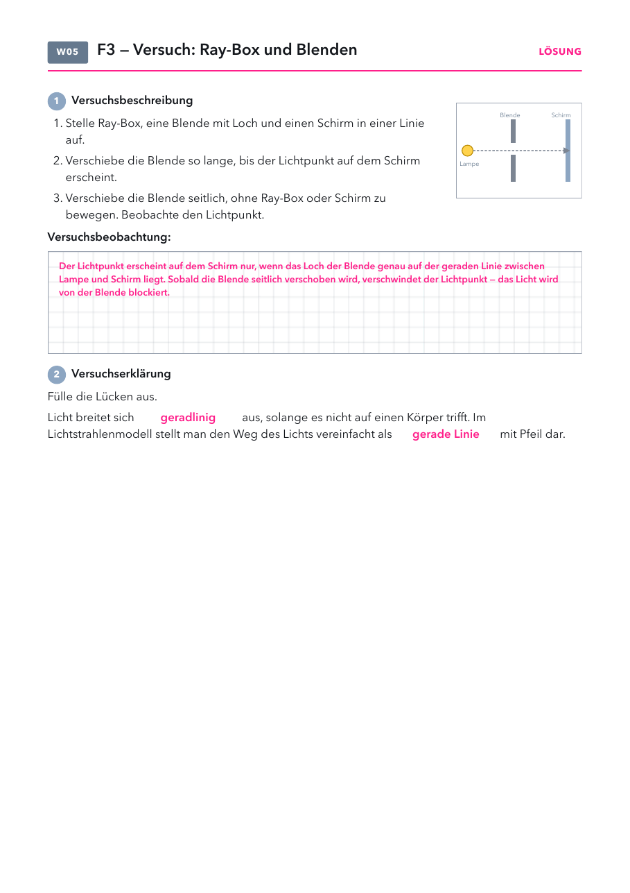

- Versuchsblatt: Kopiervorlage „2 auf 1“, halbe Klassenstärke drucken und in der Mitte durchschneiden.
- Folien und Lösungen: nicht drucken.
Material
Demo (für dich)
| Material | Anzahl | Hinweis |
|---|---|---|
| nicht nötig | ||
Schülerversuch (pro Gruppe)
| Material | Anzahl | Hinweis |
|---|---|---|
| Ray-Box mit Stromanschluss | 1× | Lampenseite zur Blende |
| Blende mit Loch | 1× | |
| Schirm | 1× | oder ein weißes Blatt, als Wand gefaltet |
Raum abdunkeln. Reichen die Ray-Boxen nicht für alle Gruppen, den Versuch vorne als Demo zeigen.
Die Stunde
1 · Einstieg
2 · Versuch
3 · Erklären
4 · Alltag
5 · Antwort und Check
1
Einstieg
Ball hinter der Mauer, Leitfrage 3, Vermutungen.
Ball hinter der Mauer, Leitfrage 3, Vermutungen.
2
Versuch
Ray-Box und Blende in Gruppen, Versuchsblatt.
Ray-Box und Blende in Gruppen, Versuchsblatt.
3
Erklären
Lichtbündel, Blende, Lichtstrahlenmodell.
Lichtbündel, Blende, Lichtstrahlenmodell.
4
Alltag
Beispiele mündlich, Frage zum Nebel.
Beispiele mündlich, Frage zum Nebel.
5
Antwort und Check
Antwort auf Leitfrage 3 ins Heft, Handzeichen, Lösung.
Antwort auf Leitfrage 3 ins Heft, Handzeichen, Lösung.
Folie 1
Beobachte
Der Ball liegt hinter der Mauer. Warum siehst du ihn nicht?
Folie 2
Leitfrage 3
Warum können wir nicht um die Ecke sehen?

Was vermutest du? Wir sammeln eure Vermutungen.
Folie 3 · Schülerblatt mit Lösung
📄 Versuchsblatt austeilen · Versuch in Gruppen

Folie 4
4. Wie breitet sich Licht aus?
Das Licht einer Lichtquelle breitet sich in verschiedene Richtungen aus. → es läuft
auseinander (divergent). Mithilfe von Blenden oder
Spalten kann man daraus parallele Lichtbündel erzeugen.
Folie 5
5. Das Lichtstrahlenmodell
Ein Lichtstrahl ist ein Modell: ein gedachter, unendlich dünner
Teil eines Lichtbündels. Modelle vereinfachen die Wirklichkeit, damit wir sie zeichnen und erklären können.
Folie 6
Geradlinige Ausbreitung im Alltag
| im Alltag | was man sieht | warum |
|---|---|---|
| Sonne hinter Wolken | helle, gerade Streifen | Das Licht läuft geradlinig durch die Wolkenlücken. Dunst und Staub machen den Weg sichtbar. |
| Scheinwerfer im Nebel | ein gerades Lichtbündel | Die Nebeltröpfchen streuen einen Teil des Lichts zu uns. |
| Blick durchs Schlüsselloch | nur ein kleiner Teil des Zimmers | Nur Licht, das auf gerader Linie durch das Loch kommt, erreicht das Auge. |
| Verkehrsspiegel an einer Ausfahrt | man sieht um die Ecke | Das Licht geht nicht um die Ecke. Der Spiegel lenkt es um. |
| Kreuzlinienlaser beim Fliesenlegen | eine gerade rote Linie an der Wand | Weil Licht geradlinig läuft, dient es als Lineal. |
Frage: Warum sieht man das Lichtbündel im Nebel, in klarer Luft aber nicht?
Folie 7
Antwort auf Leitfrage 3
Warum können wir nicht um die Ecke sehen?
Weil sich Licht geradlinig ausbreitet. Es läuft von der Lichtquelle
aus in alle Richtungen auseinander, macht aber keinen Bogen um Hindernisse.
Diese Ausbreitung beschreiben wir mit dem Lichtstrahlenmodell.
Folie 8
Check zu Leitfrage 3
1) Wie breitet sich Licht in Luft aus?
- In Bögen um Hindernisse herum
- Geradlinig
- Nur nach unten
- In Wellenlinien um die Ecke
2) Was ist ein Lichtstrahl?
- Ein besonders helles Lichtbündel
- Ein Gerät im Physikraum
- Ein Modell, das die Richtung des Lichts zeigt
- Ein sehr dünnes Kabel
Folie 9
Lösung
1) b 2) c
Wie breitet sich Licht aus?
- Geradlinig, solange der Stoff gleich bleibt (Luft, Wasser, Glas). An der Grenze zwischen zwei Stoffen kann es die Richtung ändern, das kommt später.
- Sehr schnell: knapp 300 000 km pro Sekunde. Von der Sonne zur Erde braucht das Licht gut 8 Minuten.
- Lichtbündel: Eine Lichtquelle sendet in alle Richtungen, das Licht läuft auseinander (divergent). Eine Blende lässt nur einen Teil durch. Mit einem schmalen Spalt wird das Bündel fast parallel.
- Typische Fehlvorstellungen: Licht „füllt“ den Raum wie Luft. Licht bleibt in der Lampe, bis es hell ist. Nur dort, wo es hell aussieht, ist Licht.
Das Lichtstrahlenmodell
- Einen Lichtstrahl gibt es in Wirklichkeit nicht. Auch das schmalste Lichtbündel hat eine Breite.
- Das Modell zeigt nur Weg und Richtung. Helligkeit und Farbe zeigt es nicht.
- Gute Frage an die Klasse: Was stimmt am Modell, was ist vereinfacht, was fehlt? So bewertet das Buch auf S. 32 Modelle.
- Typische Fehlvorstellung: Der gezeichnete Strahl sei das, was man im Versuch sieht.
Tipps zum Versuch
- Raum abdunkeln, sonst ist der Lichtpunkt kaum zu sehen.
- Ray-Box, Blende und Schirm an einer Tischkante oder einem Lineal ausrichten. Dann finden die Gruppen den Lichtpunkt schneller.
- Beim seitlichen Verschieben verschwindet der Lichtpunkt, weil das Loch nicht mehr auf der geraden Linie liegt. Das ist der Kern des Versuchs.
- Zusatz für schnelle Gruppen: eine zweite Blende dazwischen. Der Punkt erscheint nur, wenn beide Löcher auf einer Linie liegen.
Sichtbare Lichtwege
- Ein Lichtbündel sieht man von der Seite nur, wenn Staub, Nebel oder Rauch einen Teil des Lichts zum Auge streuen. Das knüpft an Leitfrage 2 an.
- Sonnenstrahlen durch Wolkenlücken wirken fächerförmig. Eigentlich laufen sie fast parallel. Das Auffächern ist ein Perspektiv-Effekt wie bei Bahngleisen.
- Laser nie auf Augen richten.
Warum nicht um die Ecke?
- Schall hört man um die Ecke, Licht sieht man nicht um die Ecke. Das ist ein guter Vergleich für die Klasse.
- Um die Ecke sehen geht nur, wenn etwas das Licht umlenkt: Spiegel, Periskop, Handykamera.
Ideen aus Erlebnis Physik 7–9
| Seite | Idee und so geht's | Passt zu |
|---|---|---|
| S. 33 A | Teelicht durch einen Gummischlauch. Durch den geraden Schlauch (etwa 15 cm) sieht man die Flamme, durch den gebogenen nicht. Kurzer Einstieg oder Zusatz zum Versuch. Material: Teelicht, Feuerzeug, Gummischlauch. | Folie 2 oder 3 |
| S. 33 B | Lichtwege sichtbar machen. Kleine Löcher in Alufolie stechen, damit die Handylampe abdecken, Raum abdunkeln. Rauch von einem ausgepusteten Teelicht macht die geraden Lichtwege sichtbar. Vorsicht Rauchmelder, Kreidestaub oder ein Wassersprüher gehen auch. | Folie 4 und 6 |
| S. 32 | Modelle bewerten. Was am Modell stimmt, was vereinfacht ist und was fehlt. Passt zum Lichtstrahlenmodell. | Folie 5 |
Versuchsblatt Ray-Box und Blenden
PDF öffnenKopiervorlage 2 auf 1Lösung: Der Lichtpunkt erscheint nur, wenn das Loch genau auf der geraden Linie zwischen Lampe und Schirm liegt. Wird die Blende seitlich verschoben, verschwindet er. Lücken: geradlinig, gerade Linie.
Strahlenlabor
Labor öffnenAlle LaboreZum Zeigen, was im Versuch nicht geht: Blende 2 dazuschalten, Spaltbreite ändern, Lichtweg im Nebel, Verkehrsspiegel. Auch für zu Hause geeignet.